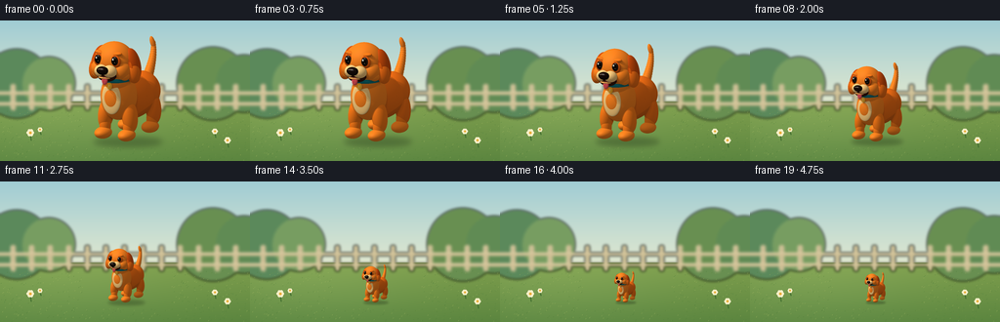
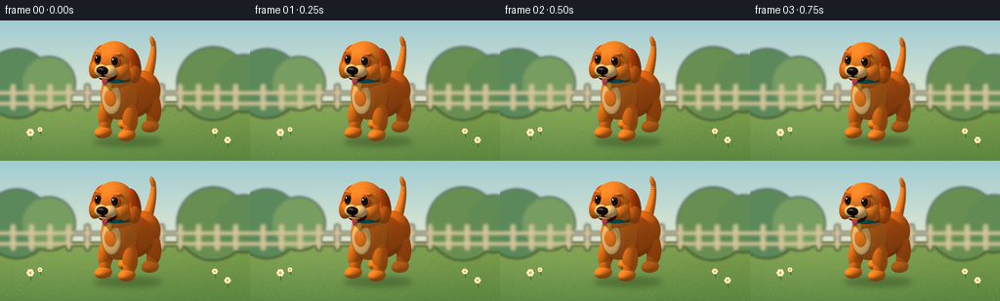

CODING AGENTS AS PIXEL WORLD MODELS
traex/GPT-6.1-Sol · instance_preservation_0048
点击播放 · 原生 RGB 像素
此结果可播放，但该运行尚未通过最终提交审核。页面展示不代表评测通过。
逐轮保存的候选
回放视频、检查图与代码变化。
每份候选均可单独播放。实际图片检查记录在下方工具轨迹中。
候选 01播放与检查图
点击播放 · 原生 RGB 像素


展开代码变化
--- 上一保存版本
+++ 本次保存版本
@@ -0,0 +1,232 @@
+from pathlib import Path
+import math
+import numpy as np
+from PIL import Image, ImageDraw, ImageFilter
+import artifact_io
+
+ROOT = Path(__file__).resolve().parent
+W,H,N = 256,144,20
+S=4
+rng=np.random.default_rng(12)
+
+# A small hand-built sculpture, rendered analytically with ellipsoid intersections.
+# The same sculpture is used at every size, with an unmoving camera and lawn.
+parts=[]
+def ell(c,r,col,rot=0,axis='z',shine=0):
+ a=math.radians(rot); cs,sn=math.cos(a),math.sin(a)
+ if axis=='z': R=np.array([[cs,-sn,0],[sn,cs,0],[0,0,1]],np.float32)
+ elif axis=='x': R=np.array([[1,0,0],[0,cs,-sn],[0,sn,cs]],np.float32)
+ else: R=np.array([[cs,0,sn],[0,1,0],[-sn,0,cs]],np.float32)
+ parts.append((np.array(c,np.float32),np.array(r,np.float32),R,np.array(col,np.float32),shine))
+orange=(.94,.39,.065); gold=(1,.48,.10); honey=(.98,.44,.075)
+cream=(1,.79,.46); ear=(.78,.26,.035)
+# Body, rump, chest, and neck.
+ell((0,1.18,-.35),(.61,.69,1.13),orange)
+ell((0,1.29,-.94),(.62,.63,.59),orange)
+ell((0,1.39,.52),(.58,.79,.59),gold)
+ell((0,1.96,.68),(.46,.53,.43),gold)
+# Four full legs, rounded feet, and tiny toe grooves.
+for x in [-.43,.43]:
+ for z in [-.94,.58]:
+ far=z<0
+ ell((x,.78,z),(.245,.54,.29),orange if far else honey,rot=(-8 if x<0 else 8))
+ ell((x,.41,z+.06),(.18,.38,.20),honey)
+ ell((x,.18,z+.19),(.26,.19,.35),gold)
+ for dx in [-.076,.077]:
+ ell((x+dx,.151,z+.481),(.012,.046,.014),(.63,.28,.065))
+# Raised, fluffy curving tail. Segments fit smoothly into one another.
+for i in range(17):
+ t=i/16
+ c=(-.03-.17*t,1.43+1.18*t,-1.24-.84*math.sin(t*1.5))
+ radius=.19*(1-.62*t)
+ ell(c,(radius,radius*1.18,radius),gold)
+# A few soft pointed coat locks at the tail tip.
+ell((-.21,2.63,-2.04),(.078,.20,.083),gold,rot=18)
+# Cream bib, visible beneath a contrasting teal collar.
+ell((0,1.38,1.003),(.345,.52,.082),cream)
+ell((0,1.975,.68),(.485,.15,.48),(.035,.43,.46),shine=.18)
+ell((.0,1.81,1.12),(.095,.117,.028),(1,.67,.13),shine=.5)
+ell((.0,1.82,1.15),(.022,.046,.008),(1,.85,.43),shine=.25)
+# Rounded head and soft cheek fur.
+ell((0,2.58,.80),(.65,.62,.58),gold)
+ell((-.40,2.35,1.01),(.28,.31,.31),gold)
+ell((.40,2.35,1.01),(.28,.31,.31),gold)
+# Floppy ears: attached high, hanging alongside cheeks.
+for sign in [-1,1]:
+ ell((sign*.60,2.48,.70),(.25,.55,.31),ear,rot=sign*13)
+ ell((sign*.675,2.28,.79),(.225,.37,.245),orange,rot=sign*12)
+ ell((sign*.655,2.37,.964),(.126,.31,.043),(.88,.32,.035),rot=sign*12)
+ # Small cheek tufts make a softer dog silhouette.
+ ell((sign*.50,2.18,1.01),(.18,.16,.17),gold,rot=sign*22)
+# Eye sockets and expressive brows.
+for sign in [-1,1]:
+ ell((sign*.30,2.67,1.272),(.19,.203,.079),(.83,.30,.04))
+ ell((sign*.305,2.69,1.316),(.127,.15,.057),(.115,.064,.027),shine=.7)
+ ell((sign*.305-.014,2.693,1.366),(.087,.111,.019),(.022,.015,.012),shine=.65)
+ ell((sign*.305-.033,2.748,1.383),(.030,.036,.012),(.99,.99,.92),shine=.8)
+ ell((sign*.305+.029,2.651,1.383),(.012,.014,.006),(.73,.66,.46),shine=.8)
+ ell((sign*.31,2.896,1.19),(.18,.066,.091),honey,rot=sign*9)
+# Smile and pale muzzle, black nose, pink tongue.
+ell((0,2.224,1.30),(.342,.232,.24),(.19,.064,.026))
+ell((-.15,2.345,1.371),(.233,.204,.233),cream)
+ell((.15,2.345,1.371),(.233,.204,.233),cream)
+ell((0,2.15,1.414),(.232,.052,.16),(.98,.64,.30))
+ell((0,2.396,1.578),(.212,.134,.127),(.067,.036,.025),shine=.75)
+ell((-.045,2.449,1.676),(.092,.031,.018),(.30,.24,.19),shine=.65)
+ell((0,2.30,1.61),(.022,.095,.017),(.20,.082,.03))
+ell((.035,2.083,1.497),(.106,.16,.055),(.93,.29,.32),rot=-5,shine=.1)
+ell((.028,2.09,1.551),(.008,.077,.008),(.68,.16,.22))
+# Whisker follicles, deliberately subtle rather than whisker-like wires.
+for sign in [-1,1]:
+ for x,y in [(.18,2.33),(.23,2.36),(.245,2.30)]:
+ ell((sign*x,y,1.577),(.011,.011,.009),(.60,.33,.14))
+
+
+def intersect(orig,dirs, want_id=False, limit=np.inf):
+ size=len(orig)
+ best=np.full(size,limit,np.float32)
+ ident=np.full(size,-1,np.int16)
+ for i,(c,r,R,col,sh) in enumerate(parts):
+ q=(orig-c)@R/r
+ v=dirs@R/r
+ A=np.einsum('ij,ij->i',v,v)
+ B=np.einsum('ij,ij->i',q,v)
+ C=np.einsum('ij,ij->i',q,q)-1
+ disc=B*B-A*C
+ root=np.sqrt(np.maximum(disc,0))
+ t=(-B-root)/A
+ t2=(-B+root)/A
+ t=np.where(t>0.0001,t,t2)
+ hit=(disc>=0)&(t>0.0001)&(t<best)
+ best[hit]=t[hit]; ident[hit]=i
+ return best,ident
+
+
+def render_dog():
+ rw,rh=620,650
+ front=np.array([.48,.21,.852],np.float32); front/=np.linalg.norm(front)
+ right=np.cross([0,1,0],front); right/=np.linalg.norm(right)
+ up=np.cross(front,right)
+ target=np.array([0,1.63,-.15],np.float32)
+ ys,xs=np.mgrid[0:rh,0:rw].astype(np.float32)
+ u=(xs+.5-rw/2)*4.0/rw
+ v=(rh/2-ys-.5)*4.20/rh
+ origins=(target+front*8+u[...,None]*right+v[...,None]*up).reshape(-1,3)
+ direction=np.tile(-front,(rh*rw,1))
+ t,ids=intersect(origins,direction,True)
+ valid=ids>=0; idx=np.flatnonzero(valid)
+ p=origins[idx]+direction[idx]*t[idx,None]
+ norms=np.zeros_like(p); albedo=np.zeros_like(p); shine=np.zeros(len(p),np.float32)
+ for i,(c,r,R,col,sh) in enumerate(parts):
+ m=ids[idx]==i
+ local=(p[m]-c)@R
+ normals=(local/(r*r))@R.T
+ normals/=np.maximum(np.linalg.norm(normals,axis=1,keepdims=True),1e-7)
+ norms[m]=normals; albedo[m]=col; shine[m]=sh
+ light=np.array([-3,6,5],np.float32); light/=np.linalg.norm(light)
+ visibility=np.zeros(len(p),np.float32)
+ for off in [(-.10,0,.06),(0,0,0),(.10,0,-.06)]:
+ ld=light+np.array(off,dtype=np.float32); ld/=np.linalg.norm(ld)
+ tt,ii=intersect(p+norms*.004,np.tile(ld,(len(p),1)))
+ visibility+=(ii<0)/3
+ # Local occlusion in a few ambient directions, for the ear and limb creases.
+ ao=np.zeros(len(p),np.float32)
+ for vec in [[1,1,.5],[-1,1,.5],[0,.7,1]]:
+ amb=np.tile(np.array(vec,np.float32),(len(p),1))+norms*1.2
+ amb/=np.linalg.norm(amb,axis=1,keepdims=True)
+ at,ai=intersect(p+norms*.008,amb,limit=.26)
+ ao+=(ai>=0)*(1-np.minimum(at/.26,1))/3
+ diff=np.maximum(norms@light,0)
+ ambient=(.51+.075*norms[:,1])*(1-.38*ao)
+ shading=ambient+.51*diff*(.22+.78*visibility)
+ colors=albedo*shading[:,None]
+ half=light+front; half/=np.linalg.norm(half)
+ spec=np.maximum(norms@half,0)**(18+shine*75)
+ colors+=spec[:,None]*(.035+shine[:,None]*.55)*visibility[:,None]
+ # Fine, deterministic coat grain on orange surfaces.
+ fur=(albedo[:,0]>.6)&(albedo[:,1]<.65)&(albedo[:,2]<.2)
+ noise=np.sin(p[:,0]*281+p[:,1]*379+p[:,2]*217)*np.sin(p[:,2]*319-p[:,1]*197)
+ colors[fur]*=(1+.018*noise[fur,None])
+ colors=np.clip(colors,0,1)
+ # Film-like display curve retains saturated orange in the illuminated fur.
+ colors=np.power(colors,.89)
+ out=np.zeros((rh*rw,4),np.uint8)
+ out[idx,:3]=(colors*255).astype(np.uint8); out[idx,3]=255
+ image=Image.fromarray(out.reshape(rh,rw,4),'RGBA')
+ return image.crop(image.getbbox())
+
+
+def background():
+ ww,hh=W*S,H*S
+ yy,xx=np.mgrid[:hh,:ww].astype(float); y=yy/S; x=xx/S
+ img=np.zeros((hh,ww,3),float)
+ sky0=np.array([160,204,212]); sky1=np.array([229,234,207])
+ z=np.clip(y/90,0,1)
+ img[:]=sky0[None,None,:]*(1-z[...,None])+sky1[None,None,:]*z[...,None]
+ lawn=y>=83
+ g=np.clip((y-83)/61,0,1)
+ grass=np.array([127,159,77])[None,None,:]*(1-g[...,None])+np.array([91,133,63])[None,None,:]*g[...,None]
+ sun=np.exp(-((x-63)**2/13000+(y-100)**2/4000))*10
+ img[lawn]=(grass+sun[...,None])[lawn]
+ im=Image.fromarray(np.uint8(np.clip(img,0,255)))
+ distant=Image.new('RGBA',(ww,hh)); d=ImageDraw.Draw(distant)
+ # Soft tree masses and a stationary low wooden garden fence establish scale.
+ for c,r,color in [(17,35,(91,137,91,255)),(50,27,(119,157,97,255)),(218,37,(104,143,81,255)),(250,29,(96,139,84,255))]:
+ d.ellipse(((c-r)*S,(64-r)*S,(c+r)*S,(65+r)*S),fill=color)
+ for x0 in range(-8,270,19):
+ d.rounded_rectangle((x0*S,65*S,(x0+5)*S,92*S),radius=2*S,fill=(203,189,147,255))
+ d.line((x0*S,66*S,x0*S,90*S),fill=(224,211,170,255),width=S)
+ for y0 in [73,84]:
+ d.rectangle((0,y0*S,ww,(y0+3)*S),fill=(207,191,148,255))
+ d.line((0,y0*S,ww,y0*S),fill=(226,211,171,255),width=S)
+ distant=distant.filter(ImageFilter.GaussianBlur(1.4*S))
+ im=Image.alpha_composite(im.convert('RGBA'),distant)
+ d=ImageDraw.Draw(im)
+ for i in range(730):
+ xx0=rng.uniform(0,W); yy0=rng.uniform(92,144)
+ if 85<xx0<175 and yy0<131: continue
+ size=rng.uniform(.35,1.2)*(yy0/144)
+ color=rng.choice([(110,148,70,110),(167,186,99,100),(77,123,56,95)])
+ d.line((xx0*S,yy0*S,(xx0+.6)*S,(yy0-size)*S),fill=tuple(color),width=max(1,int(S*.3)))
+ # Little daisies remain the same size while the dog becomes tiny.
+ for x0,y0,scale in [(32,123,1),(42,117,.65),(221,120,.8),(234,130,.9)]:
+ d.line((x0*S,y0*S,(x0-1)*S,(y0-7*scale)*S),fill=(63,109,47,255),width=S)
+ cx,cy=(x0-1)*S,(y0-8*scale)*S
+ for k in range(6):
+ a=k*math.pi/3
+ px=cx+math.cos(a)*2.1*scale*S; py=cy+math.sin(a)*2.1*scale*S
+ r=1.7*scale*S
+ d.ellipse((px-r,py-r,px+r,py+r),fill=(247,239,199,255))
+ r=1.25*scale*S
+ d.ellipse((cx-r,cy-r,cx+r,cy+r),fill=(233,171,56,255))
+ return im.convert('RGB')
+
+
+def main():
+ dog=render_dog()
+ dog.save(ROOT/'dog_render.png')
+ bg=background()
+ frames=[]
+ for i in range(N):
+ # Short holds at either end, smoothly shrinking without walking away.
+ t=np.clip((i-2)/15,0,1)
+ ease=t*t*(3-2*t)
+ height=108*(1-ease)+31*ease
+ fac=height/dog.height
+ dw=int(round(dog.width*fac*S)); dh=int(round(height*S))
+ frame=bg.copy().convert('RGBA')
+ shadow=Image.new('RGBA',frame.size)
+ dr=ImageDraw.Draw(shadow)
+ s=height/108
+ foot=124*S
+ dr.ellipse(((128-32*s)*S,foot-4*s*S,(128+38*s)*S,foot+4.5*s*S),fill=(38,59,29,100))
+ shadow=shadow.filter(ImageFilter.GaussianBlur(max(.65,3*s)*S))
+ frame=Image.alpha_composite(frame,shadow)
+ # The paws remain grounded at the same location, proving true size change.
+ sprite=dog.resize((dw,dh),Image.Resampling.LANCZOS)
+ frame.alpha_composite(sprite,(round(128*S-dw/2),round(124*S-dh)))
+ frame=frame.convert('RGB').resize((W,H),Image.Resampling.LANCZOS)
+ frames.append(np.asarray(frame,dtype=np.uint8))
+ artifact_io.save(np.stack(frames),ROOT)
+
+if __name__=='__main__': main()
可观测工具轨迹
实际执行的命令与返回图片。
命令 1exit 0
/bin/bash -lc "ls -la && cat prompt.txt && printf '\\n---RULES---\\n' && cat GENERATION_RULES.md && printf '\\n---SPEC---\\n' && cat task_spec.json"
命令 2exit 0
/bin/bash -lc "cat artifact_io.py && cat player_template.html | head -20 && python - <<'PY' import importlib.util for a in ['numpy','PIL','scipy']: print(a, bool(importlib.util.find_spec(a))) PY"
命令 3exit 0
/bin/bash -lc "cat > generate.py <<'PY'
from pathlib import Path
import math
import numpy as np
from PIL import Image, ImageDraw, ImageFilter
import artifact_io
ROOT = Path(__file__).resolve().parent
W,H,N = 256,144,20
S=4
rng=np.random.default_rng(12)
# A small hand-built sculpture, rendered analytically with ellipsoid intersections.
# The same sculpture is used at every size, with an unmoving camera and lawn.
parts=[]
def ell(c,r,col,rot=0,axis='z',shine=0):
a=math.radians(rot); cs,sn=math.cos(a),math.sin(a)
if axis=='z': R=np.array([[cs,-sn,0],[sn,cs,0],[0,0,1]],np.float32)
elif axis=='x': R=np.array([[1,0,0],[0,cs,-sn],[0,sn,cs]],np.float32)
else: R=np.array([[cs,0,sn],[0,1,0],[-sn,0,cs]],np.float32)
parts.append((np.array(c,np.float32),np.array(r,np.float32),R,np.array(col,np.float32),shine))
orange=(.94,.39,.065); gold=(1,.48,.10); honey=(.98,.44,.075)
cream=(1,.79,.46); ear=(.78,.26,.035)
# Body, rump, chest, and neck.
ell((0,1.18,-.35),(.61,.69,1.13),orange)
ell((0,1.29,-.94),(.62,.63,.59),orange)
ell((0,1.39,.52),(.58,.79,.59),gold)
ell((0,1.96,.68),(.46,.53,.43),gold)
# Four full legs, rounded feet, and tiny toe grooves.
for x in [-.43,.43]:
for z in [-.94,.58]:
far=z<0
ell((x,.78,z),(.245,.54,.29),orange if far else honey,rot=(-8 if x<0 else 8))
ell((x,.41,z+.06),(.18,.38,.20),honey)
ell((x,.18,z+.19),(.26,.19,.35),gold)
for dx in [-.076,.077]:
ell((x+dx,.151,z+.481),(.012,.046,.014),(.63,.28,.065))
# Raised, fluffy curving tail. Segments fit smoothly into one another.
for i in range(17):
t=i/16
c=(-.03-.17*t,1.43+1.18*t,-1.24-.84*math.sin(t*1.5))
radius=.19*(1-.62*t)
ell(c,(radius,radius*1.18,radius),gold)
# A few soft pointed coat locks at the tail tip.
ell((-.21,2.63,-2.04),(.078,.20,.083),gold,rot=18)
# Cream bib, visible beneath a contrasting teal collar.
ell((0,1.38,1.003),(.345,.52,.082),cream)
ell((0,1.975,.68),(.485,.15,.48),(.035,.43,.46),shine=.18)
ell((.0,1.81,1.12),(.095,.117,.028),(1,.67,.13),shine=.5)
ell((.0,1.82,1.15),(.022,.046,.008),(1,.85,.43),shine=.25)
# Rounded head and soft cheek fur.
ell((0,2.58,.80),(.65,.62,.58),gold)
ell((-.40,2.35,1.01),(.28,.31,.31),gold)
ell((.40,2.35,1.01),(.28,.31,.31),gold)
# Floppy ears: attached high, hanging alongside cheeks.
for sign in [-1,1]:
ell((sign*.60,2.48,.70),(.25,.55,.31),ear,rot=sign*13)
ell((sign*.675,2.28,.79),(.225,.37,.245),orange,rot=sign*12)
ell((sign*.655,2.37,.964),(.126,.31,.043),(.88,.32,.035),rot=sign*12)
# Small cheek tufts make a softer dog silhouette.
ell((sign*.50,2.18,1.01),(.18,.16,.17),gold,rot=sign*22)
# Eye sockets and expressive brows.
for sign in [-1,1]:
ell((sign*.30,2.67,1.272),(.19,.203,.079),(.83,.30,.04))
ell((sign*.305,2.69,1.316),(.127,.15,.057),(.115,.064,.027),shine=.7)
ell((sign*.305-.014,2.693,1.366),(.087,.111,.019),(.022,.015,.012),shine=.65)
ell((sign*.305-.033,2.748,1.383),(.030,.036,.012),(.99,.99,.92),shine=.8)
ell((sign*.305+.029,2.651,1.383),(.012,.014,.006),(.73,.66,.46),shine=.8)
ell((sign*.31,2.896,1.19),(.18,.066,.091),honey,rot=sign*9)
# Smile and pale muzzle, black nose, pink tongue.
ell((0,2.224,1.30),(.342,.232,.24),(.19,.064,.026))
ell((-.15,2.345,1.371),(.233,.204,.233),cream)
ell((.15,2.345,1.371),(.233,.204,.233),cream)
ell((0,2.15,1.414),(.232,.052,.16),(.98,.64,.30))
ell((0,2.396,1.578),(.212,.134,.127),(.067,.036,.025),shine=.75)
ell((-.045,2.449,1.676),(.092,.031,.018),(.30,.24,.19),shine=.65)
ell((0,2.30,1.61),(.022,.095,.017),(.20,.082,.03))
ell((.035,2.083,1.497),(.106,.16,.055),(.93,.29,.32),rot=-5,shine=.1)
ell((.028,2.09,1.551),(.008,.077,.008),(.68,.16,.22))
# Whisker follicles, deliberately subtle rather than whisker-like wires.
for sign in [-1,1]:
for x,y in [(.18,2.33),(.23,2.36),(.245,2.30)]:
ell((sign*x,y,1.577),(.011,.011,.009),(.60,.33,.14))
def intersect(orig,dirs, want_id=False, limit=np.inf):
size=len(orig)
best=np.full(size,limit,np.float32)
ident=np.full(size,-1,np.int16)
for i,(c,r,R,col,sh) in enumerate(parts):
q=(orig-c)@R/r
v=dirs@R/r
A=np.einsum('ij,ij->i',v,v)
B=np.einsum('ij,ij->i',q,v)
C=np.einsum('ij,ij->i',q,q)-1
disc=B*B-A*C
root=np.sqrt(np.maximum(disc,0))
t=(-B-root)/A
t2=(-B+root)/A
t=np.where(t>0.0001,t,t2)
hit=(disc>=0)&(t>0.0001)&(t<best)
best[hit]=t[hit]; ident[hit]=i
return best,ident
def render_dog():
rw,rh=620,650
front=np.array([.48,.21,.852],np.float32); front/=np.linalg.norm(front)
right=np.cross([0,1,0],front); right/=np.linalg.norm(right)
up=np.cross(front,right)
target=np.array([0,1.63,-.15],np.float32)
ys,xs=np.mgrid[0:rh,0:rw].astype(np.float32)
u=(xs+.5-rw/2)*4.0/rw
v=(rh/2-ys-.5)*4.20/rh
origins=(target+front*8+u[...,None]*right+v[...,None]*up).reshape(-1,3)
direction=np.tile(-front,(rh*rw,1))
t,ids=intersect(origins,direction,True)
valid=ids>=0; idx=np.flatnonzero(valid)
p=origins[idx]+direction[idx]*t[idx,None]
norms=np.zeros_like(p); albedo=np.zeros_like(p); shine=np.zeros(len(p),np.float32)
for i,(c,r,R,col,sh) in enumerate(parts):
m=ids[idx]==i
local=(p[m]-c)@R
normals=(local/(r*r))@R.T
normals/=np.maximum(np.linalg.norm(normals,axis=1,keepdims=True),1e-7)
norms[m]=normals; albedo[m]=col; shine[m]=sh
light=np.array([-3,6,5],np.float32); light/=np.linalg.norm(light)
visibility=np.zeros(len(p),np.float32)
for off in [(-.10,0,.06),(0,0,0),(.10,0,-.06)]:
ld=light+np.array(off,dtype=np.float32); ld/=np.linalg.norm(ld)
tt,ii=intersect(p+norms*.004,np.tile(ld,(len(p),1)))
visibility+=(ii<0)/3
# Local occlusion in a few ambient directions, for the ear and limb creases.
ao=np.zeros(len(p),np.float32)
for vec in [[1,1,.5],[-1,1,.5],[0,.7,1]]:
amb=np.tile(np.array(vec,np.float32),(len(p),1))+norms*1.2
amb/=np.linalg.norm(amb,axis=1,keepdims=True)
at,ai=intersect(p+norms*.008,amb,limit=.26)
ao+=(ai>=0)*(1-np.minimum(at/.26,1))/3
diff=np.maximum(norms@light,0)
ambient=(.51+.075*norms[:,1])*(1-.38*ao)
shading=ambient+.51*diff*(.22+.78*visibility)
colors=albedo*shading[:,None]
half=light+front; half/=np.linalg.norm(half)
spec=np.maximum(norms@half,0)**(18+shine*75)
colors+=spec[:,None]*(.035+shine[:,None]*.55)*visibility[:,None]
# Fine, deterministic coat grain on orange surfaces.
fur=(albedo[:,0]>.6)&(albedo[:,1]<.65)&(albedo[:,2]<.2)
noise=np.sin(p[:,0]*281+p[:,1]*379+p[:,2]*217)*np.sin(p[:,2]*319-p[:,1]*197)
colors[fur]*=(1+.018*noise[fur,None])
colors=np.clip(colors,0,1)
# Film-like display curve retains saturated orange in the illuminated fur.
colors=np.power(colors,.89)
out=np.zeros((rh*rw,4),np.uint8)
out[idx,:3]=(colors*255).astype(np.uint8); out[idx,3]=255
image=Image.fromarray(out.reshape(rh,rw,4),'RGBA')
return image.crop(image.getbbox())
def background():
ww,hh=W*S,H*S
yy,xx=np.mgrid[:hh,:ww].astype(float); y=yy/S; x=xx/S
img=np.zeros((hh,ww,3),float)
sky0=np.array([160,204,212]); sky1=np.array([229,234,207])
z=np.clip(y/90,0,1)
img[:]=sky0[None,None,:]*(1-z[...,None])+sky1[None,None,:]*z[...,None]
lawn=y>=83
g=np.clip((y-83)/61,0,1)
grass=np.array([127,159,77])[None,None,:]*(1-g[...,None])+np.array([91,133,63])[None,None,:]*g[...,None]
sun=np.exp(-((x-63)**2/13000+(y-100)**2/4000))*10
img[lawn]=(grass+sun[...,None])[lawn]
im=Image.fromarray(np.uint8(np.clip(img,0,255)))
distant=Image.new('RGBA',(ww,hh)); d=ImageDraw.Draw(distant)
# Soft tree masses and a stationary low wooden garden fence establish scale.
for c,r,color in [(17,35,(91,137,91,255)),(50,27,(119,157,97,255)),(218,37,(104,143,81,255)),(250,29,(96,139,84,255))]:
d.ellipse(((c-r)*S,(64-r)*S,(c+r)*S,(65+r)*S),fill=color)
for x0 in range(-8,270,19):
d.rounded_rectangle((x0*S,65*S,(x0+5)*S,92*S),radius=2*S,fill=(203,189,147,255))
d.line((x0*S,66*S,x0*S,90*S),fill=(224,211,170,255),width=S)
for y0 in [73,84]:
d.rectangle((0,y0*S,ww,(y0+3)*S),fill=(207,191,148,255))
d.line((0,y0*S,ww,y0*S),fill=(226,211,171,255),width=S)
distant=distant.filter(ImageFilter.GaussianBlur(1.4*S))
im=Image.alpha_composite(im.convert('RGBA'),distant)
d=ImageDraw.Draw(im)
for i in range(730):
xx0=rng.uniform(0,W); yy0=rng.uniform(92,144)
if 85<xx0<175 and yy0<131: continue
size=rng.uniform(.35,1.2)*(yy0/144)
color=rng.choice([(110,148,70,110),(167,186,99,100),(77,123,56,95)])
d.line((xx0*S,yy0*S,(xx0+.6)*S,(yy0-size)*S),fill=tuple(color),width=max(1,int(S*.3)))
# Little daisies remain the same size while the dog becomes tiny.
for x0,y0,scale in [(32,123,1),(42,117,.65),(221,120,.8),(234,130,.9)]:
d.line((x0*S,y0*S,(x0-1)*S,(y0-7*scale)*S),fill=(63,109,47,255),width=S)
cx,cy=(x0-1)*S,(y0-8*scale)*S
for k in range(6):
a=k*math.pi/3
px=cx+math.cos(a)*2.1*scale*S; py=cy+math.sin(a)*2.1*scale*S
r=1.7*scale*S
d.ellipse((px-r,py-r,px+r,py+r),fill=(247,239,199,255))
r=1.25*scale*S
d.ellipse((cx-r,cy-r,cx+r,cy+r),fill=(233,171,56,255))
return im.convert('RGB')
def main():
dog=render_dog()
dog.save(ROOT/'dog_render.png')
bg=background()
frames=[]
for i in range(N):
# Short holds at either end, smoothly shrinking without walking away.
t=np.clip((i-2)/15,0,1)
ease=t*t*(3-2*t)
height=108*(1-ease)+31*ease
fac=height/dog.height
dw=int(round(dog.width*fac*S)); dh=int(round(height*S))
frame=bg.copy().convert('RGBA')
shadow=Image.new('RGBA',frame.size)
dr=ImageDraw.Draw(shadow)
s=height/108
foot=124*S
dr.ellipse(((128-32*s)*S,foot-4*s*S,(128+38*s)*S,foot+4.5*s*S),fill=(38,59,29,100))
shadow=shadow.filter(ImageFilter.GaussianBlur(max(.65,3*s)*S))
frame=Image.alpha_composite(frame,shadow)
# The paws remain grounded at the same location, proving true size change.
sprite=dog.resize((dw,dh),Image.Resampling.LANCZOS)
frame.alpha_composite(sprite,(round(128*S-dw/2),round(124*S-dh)))
frame=frame.convert('RGB').resize((W,H),Image.Resampling.LANCZOS)
frames.append(np.asarray(frame,dtype=np.uint8))
artifact_io.save(np.stack(frames),ROOT)
if __name__=='__main__': main()
PY
OPENBLAS_NUM_THREADS=1 python generate.py"保存候选 1 份；完成命令 3 次；可验证图片返回 0 张。原始 API 响应与完整日志保留在本地。